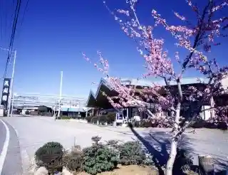
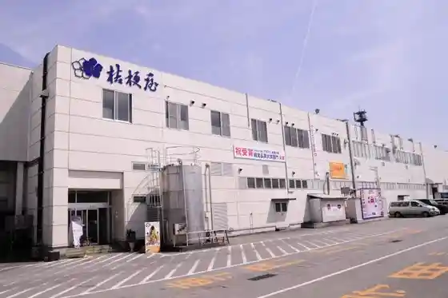
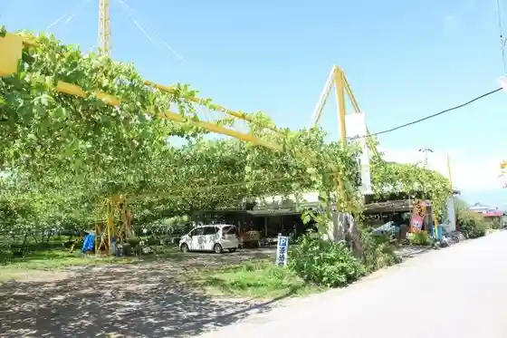
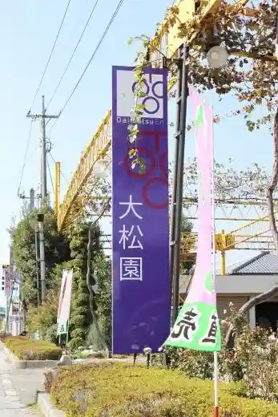

Misaka Noen Gurepuhausu
Fuefuki, Yamanashi · 055-263-3111 · Official / source link
Asama Sono
Fuefuki, Yamanashi · 0553-47-1240 · Official / source link

Kikyo Shingen Mochi Kojo Tema Park
Fuefuki, Yamanashi · 0553-47-3700 · Official / source link

Gen Bu Sono
Fuefuki, Yamanashi · 055-264-2437 · Official / source link

Omatsu Sono
Fuefuki, Yamanashi · 0553-47-0754 · Official / source link

Iso O Sono
Fuefuki, Yamanashi · 055-262-3058 · Official / source link
Yamato Sono
Fuefuki, Yamanashi · 055-225-3376 · Official / source link
Hirokazu Kanko Sono
Fuefuki, Yamanashi · 055-264-2621 · Official / source link
Ichinomiya Sono
Fuefuki, Yamanashi · 0553-47-2666 · Official / source link
Kachi Tama Sono
Fuefuki, Yamanashi · 0553-47-0624 · Official / source link
Hachi Shiro Sono
Fuefuki, Yamanashi · 0553-47-3516 · Official / source link
Kacho no Sato Supotsu Plaza
Fuefuki, Yamanashi · 055-262-4111 · Official / source link
Misaka Michi Sakura Koen Oto Campground
Fuefuki, Yamanashi · 080-3704-1122 · Official / source link
Toru Takusan
Fuefuki, Yamanashi · 055-262-4111 · Official / source link
Dai Tochi Yama
Fuefuki, Yamanashi · 055-262-4111 · Official / source link
Kasuga Yama
Fuefuki, Yamanashi · 055-262-4111 · Official / source link
Okura Kei Terayama
Fuefuki, Yamanashi · 055-262-4111 · Official / source link
Taki Toyama
Fuefuki, Yamanashi · 055-262-4111 · Official / source link
Settogagaku
Fuefuki, Yamanashi · 055-262-4111 · Official / source link
Kabutoyama
Fuefuki, Yamanashi · 055-262-4111 · Official / source link
Ka O Sono
Fuefuki, Yamanashi · 0553-47-2257 · Official / source link
Kai Ichi no Miya Kanazakura Sono
Fuefuki, Yamanashi · 0553-47-1745 · Official / source link
Ichifuru
Fuefuki, Yamanashi · 0553-47-0200 · Official / source link
Tama Sui En
Fuefuki, Yamanashi · 0553-47-1229 · Official / source link
Suzuki Nojo
Fuefuki, Yamanashi · 055-264-2415 · Official / source link
Takano Sono
Fuefuki, Yamanashi · 055-264-2558 · Official / source link
Onjuku Farm
Fuefuki, Yamanashi · 055-264-2612 · Official / source link
Kinpo Sono
Fuefuki, Yamanashi · 055-264-2344 · Official / source link
Tomi Tama Sono
Fuefuki, Yamanashi · 0553-47-2627 · Official / source link
Kiyoshi Kaen
Fuefuki, Yamanashi · 0553-47-1008 · Official / source link
Oku Village Budo Sono
Fuefuki, Yamanashi · 055-262-6361 · Official / source link
Satomi Farm
Fuefuki, Yamanashi · 0553-47-1096 · Official / source link
Muramatsu Farm
Fuefuki, Yamanashi · 055-264-1234 · Official / source link
Suzuki Budo Sono
Fuefuki, Yamanashi · 055-262-2247 · Official / source link
Higashi Noboru Sono
Fuefuki, Yamanashi · 0553-26-3301 · Official / source link
Watanabe Farm
Fuefuki, Yamanashi · 055-264-2112 · Official / source link
Kanemaru Sono
Fuefuki, Yamanashi · 055-264-2602 · Official / source link
Famirii Nojo Sa no
Fuefuki, Yamanashi · 055-264-5060 · Official / source link
Yazaki Farm
Fuefuki, Yamanashi · 055-264-2255 · Official / source link
Furuya Kabuto Tama Sono
Fuefuki, Yamanashi · 055-262-7538 · Official / source link
Toho Kanko Sono
Fuefuki, Yamanashi · 055-262-3219 · Official / source link
Kawai Yuran Farm
Fuefuki, Yamanashi · 055-263-3983 · Official / source link
Hikari Kaen
Fuefuki, Yamanashi · 055-263-5291 · Official / source link
Okeyaki Sono
Fuefuki, Yamanashi · 055-264-2617 · Official / source link
Nishi Village Nojo
Fuefuki, Yamanashi · 055-264-2149 · Official / source link
Sato Farm
Fuefuki, Yamanashi · 055-242-6290 · Official / source link
Yasushi Kaen
Fuefuki, Yamanashi · 055-264-2662 · Official / source link
Misaka Baths
Fuefuki, Yamanashi · 055-261-6166 · Official / source link
Takeshita Kanko Sono
Fuefuki, Yamanashi · 0553-47-0344 · Official / source link
Konpira Shrine
Fuefuki, Yamanashi · 055-262-4111 · Official / source link
Yamanashi Prefectural Museum
Fuefuki, Yamanashi · 055-261-2631 · Official / source link
Hatta Kasho In
Fuefuki, Yamanashi · 055-261-6111 · Official / source link
Kamui Misaka Ski Area
Fuefuki, Yamanashi · 055-264-2614 · Official / source link
Koshu Tennen Ishi Workshop Sai Ishi no Kura
Fuefuki, Yamanashi · 055-263-6885 · Official / source link
Sakura Onsen Tori Irumineshon
Fuefuki, Yamanashi · 055-262-4111 · Official / source link
Marukita Hanamomo Sono
Fuefuki, Yamanashi · 0553-47-2667 · Official / source link
Miso Workshop no Sato
Fuefuki, Yamanashi · 090-3147-2470 · Official / source link
Kobayashi Park
Fuefuki, Yamanashi · 055-262-3334 · Official / source link
Shakagagaku
Fuefuki, Yamanashi · 055-261-2034 · Official / source link
Misaka Kurodake
Fuefuki, Yamanashi · 055-261-2034 · Official / source link
Hotaru Village (Fuefuki)
Fuefuki, Yamanashi · 055-261-2829 · Official / source link
Fuefuki Kawa
Fuefuki, Yamanashi · 055-261-2034 · Official / source link
Fujinuta no Taki Okubo Iyashi no Mori Park
Fuefuki, Yamanashi · 055-261-2034 · Official / source link
Kacho Yamaichi Motosugi Park
Fuefuki, Yamanashi · 055-261-2034 · Official / source link
Yamanashiken Forest Park Kanagawa Forest
Fuefuki, Yamanashi · 0553-47-2805 · Official / source link
Isawa Onsen Sakura Onsen Tori Cherry Blossoms
Fuefuki, Yamanashi · 055-261-2034 · Official / source link
Yamanashi Oka Shrine
Fuefuki, Yamanashi · 055-261-2034 · Official / source link
Yatsushiro Furusato Park
Fuefuki, Yamanashi · 055-261-2034 · Official / source link
Ashi Kawa no Suzuran Gunsei Chi
Fuefuki, Yamanashi · 055-261-2034 · Official / source link
FUJIYAMA Tsuinterasu
Fuefuki, Yamanashi · 055-261-2034 · Official / source link
Koke Oyama Shiro Park
Fuefuki, Yamanashi · 055-261-3342 · Official / source link
Kasugai Town Shinsui Park
Fuefuki, Yamanashi · 0553-26-3111 · Official / source link
Fuefuki Togenkyo (Fuefuki Kasugai Town)
Fuefuki, Yamanashi · 055-261-2034 · Official / source link
Fuefuki Togenkyo (Fuefuki Yatsushiro Town)
Fuefuki, Yamanashi · 055-261-2034 · Official / source link
Fuefuki Togenkyo (Fuefuki Misaka Town)
Fuefuki, Yamanashi · 055-261-2034 · Official / source link
Experience Workshop Yamanashi Dentokogei Kan
Fuefuki, Yamanashi · 055-263-6741 · Official / source link
Maruzen Farm
Fuefuki, Yamanashi · 055-262-6022 · Official / source link
Fuefuki Togenkyo (Fuefuki Ichinomiya Town)
Fuefuki, Yamanashi · 055-261-2034 · Official / source link
Kai Kuniichi Miya Asama Shrine
Fuefuki, Yamanashi · 0553-47-0900 · Official / source link
Sakaigawa Nosambutsu Chokubai Tokoro
Fuefuki, Yamanashi · 055-266-7700 · Official / source link
Hihara Farm
Fuefuki, Yamanashi · 0553-26-2490 · Official / source link
Toyotama Sono
Fuefuki, Yamanashi · 055-262-2448 · Official / source link
Bogamine Lookout
Fuefuki, Yamanashi · 055-262-4111 · Official / source link
Inayamagayaki Forest
Fuefuki, Yamanashi · 055-265-2111 · Official / source link
Kamo Kasuga Shrine
Fuefuki, Yamanashi · 055-261-2034 · Official / source link
Shigyoku Sono
Fuefuki, Yamanashi · 055-263-2344 · Official / source link
Kajiwara Farm
Fuefuki, Yamanashi · 055-264-2807 · Official / source link
Kagami Acherii
Fuefuki, Yamanashi · 090-2177-3686 · Official / source link
Yatsushiro Furusato Koen Lookout
Fuefuki, Yamanashi · 055-261-2034 · Official / source link
Kacho Yamaichi Motosugi Park
Fuefuki, Yamanashi · 055-261-2034 · Official / source link
Misaka Togenkyo Koen Heisei no to
Fuefuki, Yamanashi · 055-262-1120 · Official / source link
Iwata Furutsu Farm
Fuefuki, Yamanashi · 055-262-6096 · Official / source link
Arupusuwain Chokueiten Saron
Fuefuki, Yamanashi · 0553-47-5881 · Official / source link
Yatsushiro Jozo
Fuefuki, Yamanashi · 055-265-2418 · Official / source link
Rumieruwainarii
Fuefuki, Yamanashi · 0553-47-0207 · Official / source link
Monde Shuzo
Fuefuki, Yamanashi · 055-262-3161 · Official / source link
Hombo Shuzo Marusu Yamanashi Wainarii
Fuefuki, Yamanashi · 055-262-4121 · Official / source link
Aramaki Budo Sake
Fuefuki, Yamanashi · 0553-47-0071 · Official / source link
Hikawa Chuo Budo Sake (Liaison Wine)
Fuefuki, Yamanashi · 0553-47-1553 · Official / source link
Kitano Ro Jozo
Fuefuki, Yamanashi · 0553-47-1563 · Official / source link
Fuefuki Wain
Fuefuki, Yamanashi · 055-263-2299 · Official / source link
Nyu Yamanashi Wain Jozo
Fuefuki, Yamanashi · 055-263-3036 · Official / source link
Miharashi Sono
Fuefuki, Yamanashi · 0553-47-2111 · Official / source link
Daikoku Sono
Fuefuki, Yamanashi · 0553-47-1421 · Official / source link
Katada Sono
Fuefuki, Yamanashi · 055-262-5372 · Official / source link
Hisashi Sono
Fuefuki, Yamanashi · 055-265-3978 · Official / source link
Takeshita Farm
Fuefuki, Yamanashi · 0553-26-3234 · Official / source link
Megumi Ko Sono
Fuefuki, Yamanashi · 055-265-3511 · Official / source link
Yamanashi Togenkyo Market Piichi Gurepu Kan
Fuefuki, Yamanashi · 055-264-2702 · Official / source link
Saegusa Farm
Fuefuki, Yamanashi · 0553-47-3098 · Official / source link
Hisashi Tama Sono
Fuefuki, Yamanashi · 0553-47-1712 · Official / source link
Kaiji En
Fuefuki, Yamanashi · 0553-47-1733 · Official / source link
Haruka Sono
Fuefuki, Yamanashi · 0553-47-1969 · Official / source link
Matsu Village Farm
Fuefuki, Yamanashi · 0553-47-0281 · Official / source link
Baibasu Kiyoshi Kaen
Fuefuki, Yamanashi · 0553-47-2754 · Official / source link
Akao Tourist Farm
Fuefuki, Yamanashi · 0553-47-2840 · Official / source link
Takano Sono
Fuefuki, Yamanashi · 0553-47-2893 · Official / source link
Misaka Togenkyo Park
Fuefuki, Yamanashi · 055-262-1120 · Official / source link